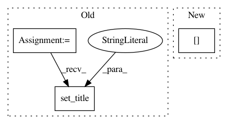

28d073e505c196f281f06219d85a452283621e06,doc/examples/reconst_dsi_metrics.py,,,#,16
Before Change
ax3.set_title("rtop_pdf_norm")
ind=ax3.imshow(rtop_pdf_norm.T,interpolation="nearest",origin="lower")
plt.colorbar(ind)
ax4=fig.add_subplot(2,2,4)
ax4.set_title("rtop_pdf")
ind=ax4.imshow(rtop_pdf.T,interpolation="nearest",origin="lower")
plt.colorbar(ind)
plt.show()
After Change
img, gtab = read_taiwan_ntu_dsi()
data = img.get_data()
affine = img.get_affine()
data = data / (data[..., 0, None]).astype(np.float)
print("data.shape (%d, %d, %d, %d)" % data.shape)
In pattern: SUPERPATTERN
Frequency: 4
Non-data size: 3
Instances
Project Name: nipy/dipy
Commit Name: 28d073e505c196f281f06219d85a452283621e06
Time: 2013-08-24
Author: mauro.zucchelli88@gmail.com
File Name: doc/examples/reconst_dsi_metrics.py
Class Name:
Method Name:
Project Name: scikit-learn-contrib/imbalanced-learn
Commit Name: 153f6e0ff5729fc22b68d5f6e0fd05edf96d8c2c
Time: 2019-11-17
Author: g.lemaitre58@gmail.com
File Name: examples/datasets/plot_make_imbalance.py
Class Name:
Method Name:
Project Name: milesial/Pytorch-UNet
Commit Name: ff1ac0936c118d129bc8a8014958948d3b3883be
Time: 2019-10-26
Author: milesial@users.noreply.github.com
File Name: utils/data_vis.py
Class Name:
Method Name: plot_img_and_mask
Project Name: nilmtk/nilmtk
Commit Name: 045bd31a5b4a7617f83cd5a372f2a86238e22704
Time: 2014-01-16
Author: nipunreddevil@gmail.com
File Name: scripts/plots_for_e_energy_2014/wm_comparison_table.py
Class Name:
Method Name: